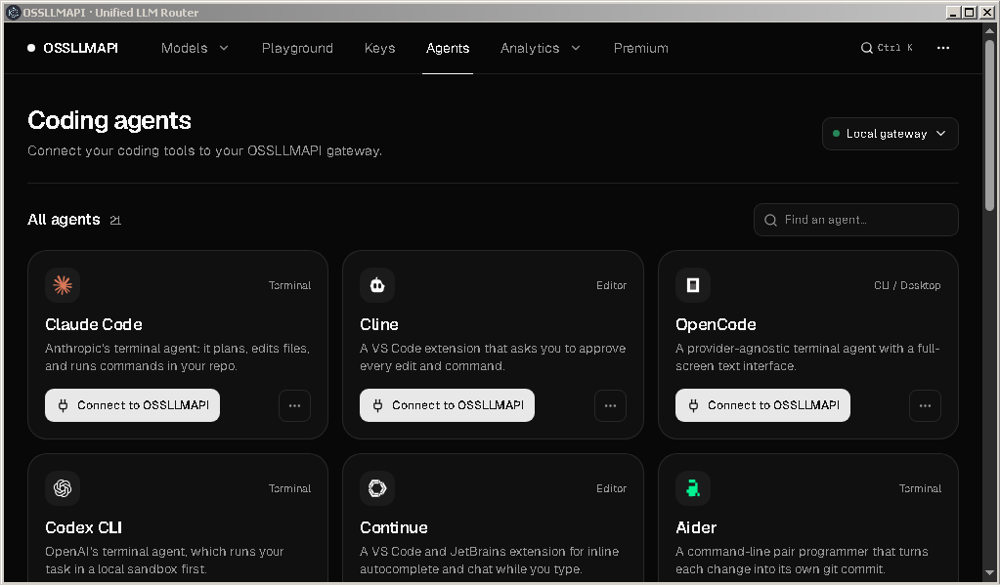
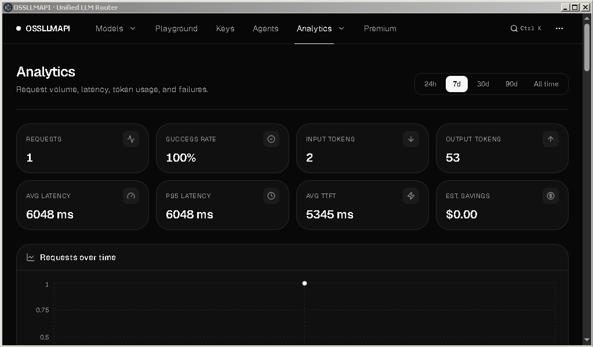

The dashboard
Every screenshot was taken on a real Windows 7 x86 machine.




- OS
- Windows 7 x86 SP1
- RAM
- 2 GB DDR2
- CPU
- Intel Atom N280 @ 1.66 GHz
- Storage
- HDD · 70 GB · ST9160310AS
Every screenshot was taken on a real Windows 7 x86 machine.

